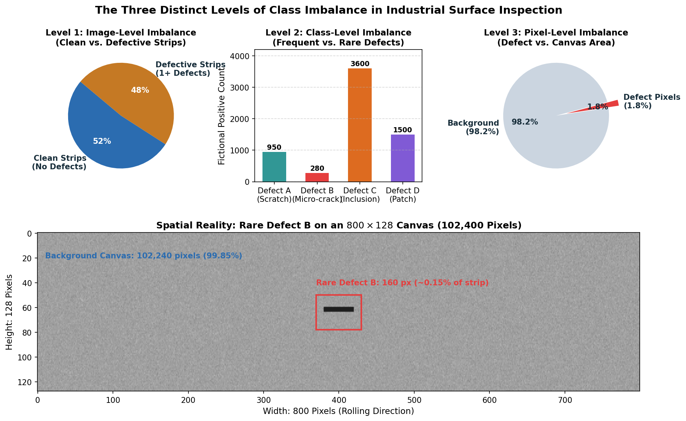
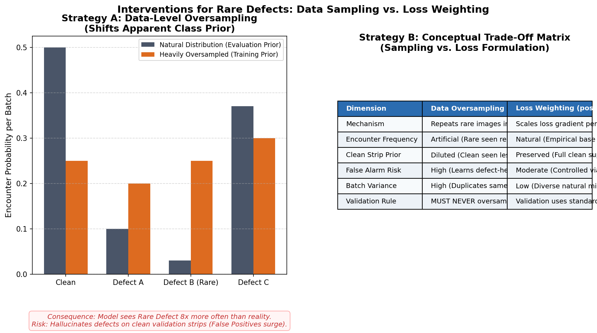

Multi-Level Class Imbalance: Image, Class, and Pixel Mechanics
In standard deep learning classification tasks, class imbalance is typically treated as a single, one-dimensional problem: some categories have fewer training examples than others. In industrial surface defect segmentation, however, class imbalance manifests across three distinct physical and statistical levels simultaneously.
An intervention designed to solve imbalance at one level can easily destabilize training or cause catastrophic error spikes at another level. This guide dissects the three tiers of imbalance, examines data-level and loss-level interventions, walks through a concrete numerical demonstration, and establishes strict validation safeguards to ensure your model detects rare anomalies without flooding clean material with false alarms.
1. Observable Problem: The Rare-Class Silence and False-Alarm Flood
Consider two failure modes commonly observed in industrial segmentation runs:
Failure Mode 1: The "Silent Predictor"
Training Loss: 0.12 (descends smoothly)
Pixel Accuracy: 98.4%
Validation Dice (defect_c): 0.65
Validation Dice (defect_b): 0.00 (Zero predicted pixels across all validation images!)
Failure Mode 2: The "False-Alarm Flood"
Student applies 50x oversampling to rare defect_b images.
Validation Dice (defect_b positives): 0.48 (Rare defects are finally detected!)
Clean-Image Specificity: Drops from 99.1% to 64.3% (Clean images receive hundreds of false alarms!)
Leaderboard Score: Plummets dramatically due to false positive penalties.Why does this happen? In Failure Mode 1, the model learned that predicting all zeros for rare defects incurs negligible loss penalty, achieving near-perfect pixel accuracy. In Failure Mode 2, the student attempted to fix the problem by flooding training with rare-defect strips; the model adapted to this artificial prior, concluded that defects are ubiquitous, and began hallucinating defects on normal, defect-free material.
To solve this, we must deconstruct imbalance into its three constitutive levels.
2. The Three Levels of Imbalance

Figure 1.1: Industrial surface segmentation exhibits three concurrent tiers of imbalance: image-level (clean vs. defective material), class-level (common vs. rare defect geometries), and pixel-level (defect area vs. canvas area).Level 1: Image-Level Imbalance (Clean vs. Defective Strips)
In a healthy industrial manufacturing line, high-grade steel strips are overwhelmingly defect-free. In our dataset domain, approximately half of all captured image strips contain no defects whatsoever.
- The Physical Meaning: Clean images represent the true operational baseline of the optical line-scan cameras. They contain normal surface textures, grain boundaries, roller marks, and lighting variations.
- The Modeling Danger: If you filter out clean images during training to "concentrate on defects," your model never learns what normal background looks like. When evaluated on real production strips, it will flag every benign surface texture as a defect.
Level 2: Class-Level Imbalance (Frequent vs. Rare Defect Classes)
Defect types do not occur with equal frequency. In an industrial rolling mill:
- Some defects (like surface inclusions or scaling, e.g.,
defect_c) are continuous metallurgical phenomena and appear frequently. - Other defects (like micro-cracks or longitudinal seam defects, e.g.,
defect_b) occur only during catastrophic tool wear or rare cooling anomalies. - The Modeling Danger: In a typical mini-batch of 8 images, a rare class like
defect_bmay not appear once across 50 consecutive gradient updates. The optimizer's moving momentum buffers (like those in AdamW) decay toward zero for rare-class parameters, starving them of gradient signal.
Level 3: Pixel-Level Imbalance (Defect Canvas Occupancy)
Even when an image contains an active defect, the anomaly occupies only a tiny fraction of the strip. On an industrial line-scan canvas of \(128 \times 800 = 102,400\text{ pixels}\):
- A hairline scratch might be 2 pixels wide and 100 pixels long (\(200\text{ pixels}\)).
- That scratch occupies only \(200 / 102,400 \approx 0.19\%\) of the image!
- The background class commands \(99.81\%\) of all supervised pixels.
- The Modeling Danger: In standard Binary Cross-Entropy (BCE), gradient contributions from the \(102,200\) background pixels easily drown out the gradients from the \(200\) defect pixels.
3. Intervention Strategies: Data-Level vs. Loss-Level
To balance optimization gradients, practitioners employ interventions either at the data pipeline level (modifying what the model sees) or at the loss function level (modifying how the model is penalized).

Figure 1.2: Comparison of data-level oversampling versus loss-level weighting. Oversampling shifts the empirical prior distribution, increasing false alarms on clean validation strips. Loss weighting preserves the natural data distribution while scaling gradient updates.Strategy A: Data-Level Sampling
Data-level interventions adjust the probability \(P(\text{draw } i)\) of selecting image \(i\) during mini-batch construction:
- Natural Uniform Sampling: Every image in the training partition has equal probability \(P(i) = 1/N\). Mini-batches reflect the real empirical distribution.
- Weighted Random Sampling (
WeightedRandomSampler): Assigns an explicit sampling weight \(w_i \ge 1.0\) to image \(i\). If image \(i\) contains raredefect_b, setting \(w_i > 1.0\) increases its frequency of inclusion in batches.
Mathematical Formulation of Bounded Inverse-Frequency Weighting:
For training set \(S\) with \(N\) images, let \(r_c\) denote the empirical positive image prevalence of class \(c \in \{1, 2, 3, 4\}\):
To prevent catastrophic oversampling, compute bounded square-root inverse weights:
where \(w_{\max} = 4.0\) is a safety ceiling and \(\epsilon = 1/N\).
For an image \(i\) containing active defect set \(\mathcal{C}_i \subseteq \{1, 2, 3, 4\}\):
[!IMPORTANT] Why take the maximum rather than the product? If an image contains both frequent
defect_cand raredefect_b, multiplying their weights would over-weight multi-defect images disproportionately. Taking the maximum ensures that an image is sampled according to its rarest constituent defect without artificial multiplication.
Strategy B: Loss-Level Weighting
Instead of altering how often images are sampled, loss-level weighting scales the gradient contribution of rare pixels directly in the objective function.
1. Positive Weighting in Binary Cross-Entropy (pos_weight)
For continuous logit \(z \in \mathbb{R}\) and binary label \(y \in \{0, 1\}\):
where \(\gamma > 1.0\) is the positive class weight (pos_weight).
If a defect occupies \(1\%\) of the canvas and background occupies \(99\%\), setting \(\gamma = 10.0\) scales the gradient contribution of true defect pixels by \(10\times\), preventing background pixels from dominating the backward pass.
2. Class-Balanced Soft Dice Loss
In standard positive-pair Dice loss, all positive defect channels are summed uniformly:
where \(\mathcal{P}\) is the set of positive image-class pairs.
In class-balanced Dice reduction, the loss calculates soft Dice independently per active defect class, and then averages across present classes:
Under this formulation, a batch containing 7 images of defect_c and 1 image of rare defect_b gives equal loss weight to both classes (\(\frac{1}{2}\mathcal{L}_c + \frac{1}{2}\mathcal{L}_b\)), preventing the abundant class from drowning out the rare class.
4. Worked Numerical Demonstration: A Fictional 100-Strip Pool
To understand how oversampling shifts the training distribution, trace a fictional pool of \(N = 100\) steel strips:
| Subgroup | Number of Strips | Natural Prevalence (\(r_c\)) | Raw Inverse \(1/r_c\) | Bounded Sqrt Weight (\(w_{\max} = 4.0\)) |
|---|---|---|---|---|
| Clean Material | 50 strips | \(50 / 100 = 0.50\) | \(2.0\) | \(1.0\) (Baseline) |
| Defect A (Scratch) | 12 strips | \(12 / 100 = 0.12\) | \(8.3\) | \(1 / \sqrt{0.12} \approx 2.89\) |
| Defect B (Micro-crack) | 3 strips | \(3 / 100 = 0.03\) | \(33.3\) | \(\min(4.0, 1 / \sqrt{0.03} \approx 5.77) = 4.0\) |
| Defect C (Inclusion) | 35 strips | \(35 / 100 = 0.35\) | \(2.86\) | \(1 / \sqrt{0.35} \approx 1.69\) |
Let us calculate the total sum of sampling weights across all 100 strips:
Now compare the probability of drawing each subgroup in any mini-batch:
-
Clean Material Encounter Rate:
\[\text{Natural} = \frac{50}{100} = 50.0\% \quad \longrightarrow \quad \text{Weighted} = \frac{50 \times 1.0}{155.83} = 32.1\%\] -
Rare Defect B Encounter Rate:
\[\text{Natural} = \frac{3}{100} = 3.0\% \quad \longrightarrow \quad \text{Weighted} = \frac{3 \times 4.0}{155.83} = 7.7\% \quad (+157\% \text{ relative exposure})\]
Notice what occurred:
- Rare
defect_bstrips are now encountered \(2.57\times\) more frequently per training epoch. - Clean images still constitute \(32.1\%\) of all draws—substantial enough to maintain strong background representation.
- If the student had used raw inverse frequency (\(w_B = 33.3\)), the 3 rare images would constitute over \(30\%\) of all training batches, causing severe memorization of those 3 specific strip textures!
5. Diagnostic Symptoms: Causes and Checks
| Observable Symptom in Logs | Underlying Root Mechanism | Concrete Measurement to Take | Corrective Next Step |
|---|---|---|---|
Validation Dice on defect_b is exactly \(0.00\), while train loss converges. |
Gradient starvation: rare class is absent from most batches; optimizer steps decay weights toward background bias. | Measure per-class positive count per epoch; check positive_dice_b vs. dice_mean. |
Introduce class-balanced Dice reduction or bounded weighted sampling (\(w_{\max} \le 4.0\)). |
| False alarm rate on clean images surges; clean specificity drops below \(80\%\). | Prior shift: model was trained on an artificially defect-dense distribution, learning an over-sensitive decision threshold. | Compute fp_rate_on_empty across classes; evaluate clean-image perfect rate. |
Reduce sampling weight ceiling (\(w_{\max}\)); re-calibrate decision thresholds \(\tau\) on natural validation data. |
| Model achieves high training Dice on rare class, but validation Dice remains near zero. | Overfitting through duplicate repetition: the model memorized the few oversampled training strips. | Check training vs. validation loss gap on rare-class subset; check gradient norms. | Apply stronger spatial augmentations (flips, contrast jitter); cap sampling weight; increase weight decay. |
Training loss diverges to NaN or spikes erratically. |
Excessive positive loss weight (pos_weight > 50) produces massive gradient explosions on rare pixel errors. |
Inspect train/gradient_norm and individual loss terms (bce_b, dice_b). |
Clamp pos_weight to a reasonable ceiling (e.g. \(\le 20.0\)); enable gradient clipping (clip_grad_norm_). |
6. Implementation Pattern: Bounded Sampling in PyTorch
Here is how to construct a bounded, leakage-free WeightedRandomSampler in PyTorch:
import numpy as np
import torch
from torch.utils.data import DataLoader, WeightedRandomSampler
def build_bounded_sampler(
train_records: list[dict],
max_weight: float = 4.0,
seed: int = 42
) -> WeightedRandomSampler:
"""Constructs a deterministic WeightedRandomSampler with bounded square-root weights."""
n_records = len(train_records)
# Binary presence array: shape [N, 4]
presence = np.array([r["active_defects"] for r in train_records], dtype=bool)
# Class prevalence rates clamped to at least 1/N
rates = np.maximum(presence.mean(axis=0), 1.0 / n_records)
# Sqrt inverse class weights capped at max_weight
class_weights = np.clip(1.0 / np.sqrt(rates), 1.0, max_weight)
# Assign weight to each image
sample_weights = np.ones(n_records, dtype=np.float64)
for i, r in enumerate(train_records):
active_classes = [c for c, is_active in enumerate(r["active_defects"]) if is_active]
if active_classes:
# Use the max class weight to avoid double-counting multi-defect images
sample_weights[i] = np.max([class_weights[c] for c in active_classes])
generator = torch.Generator().manual_seed(seed)
return WeightedRandomSampler(
weights=torch.tensor(sample_weights, dtype=torch.double),
num_samples=n_records,
replacement=True,
generator=generator
)[!WARNING] Strict Validation Invariant: The
WeightedRandomSamplermust ONLY be applied to thetrain_loader. Theval_loadermust ALWAYS use standard sequential or unweighted loading (shuffle=False,sampler=None). Altering the validation distribution invalidates your evaluation metrics!
7. Common Pitfalls Checklist
- The Validation Oversampling Trap:
- Mistake: Applying the weighted sampler to the entire dataset before splitting, or evaluating validation metrics on an oversampled validation loader.
- Consequence: Validation score appears high because rare defects are overrepresented, but fails completely on Kaggle's natural test distribution.
- Double-Counting Multi-Label Images:
- Mistake: Multiplying class weights (\(w_i = w_A \times w_B \times w_C\)) for images with multiple defects.
- Consequence: Rare multi-defect images receive astronomical weights (e.g., \(w_i = 120.0\)), causing the optimizer to overfit exclusively to those few strips.
- Ignoring Clean Image Specificity:
- Mistake: Celebrating an increase in
positive_dice_bfrom 0.00 to 0.45 without checking whetherclean_image_perfect_ratedropped from 95% to 50%. - Consequence: The official competition score drops because false-positive penalties outweigh the rare-class gain.
- Mistake: Celebrating an increase in
8. Ungraded "Try It": Auditing a Fictional Sampling Log
Inspect this output snippet from a fictional training run:
Epoch 10 Audit:
[Natural Baseline]
Train Loss: 0.184 | Val Loss: 0.192
Val Dice Mean: 0.712 | Val Foreground Dice: 0.485
Val Dice (A): 0.52 | Val Dice (B): 0.00 | Val Dice (C): 0.68 | Val Dice (D): 0.51
Clean Strip Specificity: 98.6%
[Experiment 1: Extreme Oversampling (Weight B = 25.0)]
Train Loss: 0.245 | Val Loss: 0.380
Val Dice Mean: 0.620 | Val Foreground Dice: 0.440
Val Dice (A): 0.48 | Val Dice (B): 0.41 | Val Dice (C): 0.59 | Val Dice (D): 0.44
Clean Strip Specificity: 71.2%Diagnostic Questions for You to Consider:
- In Experiment 1, why did
Val Dice Meandrop from0.712to0.620even thoughVal Dice (B)rose from0.00to0.41? - What happened to
Clean Strip Specificity, and what does that imply about the model's false alarm rate on clean steel strips? - What bounded sampling weight or loss weighting strategy would you propose as Experiment 2 to capture Defect B while keeping clean specificity above \(95\%\)?
9. Framework References
- PyTorch
torch.utils.data.WeightedRandomSampler - PyTorch
torch.nn.BCEWithLogitsLoss(parameterpos_weight) - Lin, T. Y., et al. (2017). Focal Loss for Dense Object Detection. IEEE ICCV. (Foundational reference on modulating loss for extreme foreground-background class imbalance).